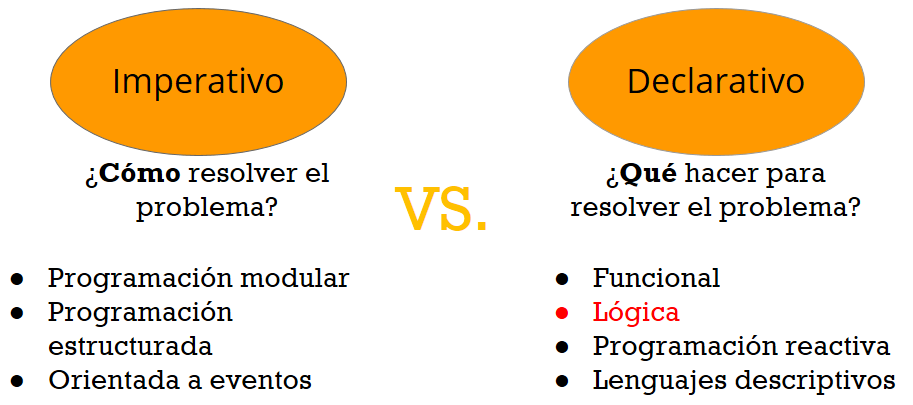

¿Qué es un paradigma?
"Es el conjunto de principios subyacentes que dan forma al estilo de un lenguaje de programación."
-Concepts, Techniques, and Models of Computer Programming.
Indica un método mediante el cual se deben resolver uno a varios problemas claramente delimitados.
Representa un enfoque particular o filosofía para diseñar soluciones.
Adoptar un paradigma es elegir una lente a través de la cual se examinarán los problemas y se diseñarán las soluciones. Esta elección puede tener un impacto profundo en el proceso de desarrollo, ya que cada paradigma lleva consigo principios y prácticas inherentes que moldean la toma de decisiones.
Paradigmas: Imperativo vs Declarativo
Dentro de los paradigmas de programación existen 2 grandes grupos: que son los Declarativos y los Imperativos. Las características principales de ellos se ven en el siguiente gráfico.

Los desarrolladores web, pasan sus días dando instrucciones a las computadoras. Estas instrucciones generalmente implican algo de entrada (ej. una solicitud de una página web), algo de lógica (ej. obtener el contenido correcto de una base de datos) y algo de salida (ej. enviar el contenido al navegador solicitante). Este proceso de decir a un ordenador cómo realizar una tarea, es lo que comúnmente llamamos "programación", pero es sólo un subconjunto de programación: la programación imperativa.
Hay otro tipo de programación, la programación declarativa. Con la programación declarativa decimos a una computadora qué, no cómo realizar una tarea. Describimos el resultado que queremos y los detalles de cómo lograrlo se dejan al intérprete de lenguaje. Este cambio sutil en el enfoque de la programación tiene amplios efectos sobre la forma en la cual construimos software.
Los lenguajes declarativos tienden a desvanecerse en el fondo de la programación, en parte porque están más cerca de cómo interactuamos naturalmente con la gente. Si estás hablando con un amigo y quieres un sándwich, normalmente no le das a tu amigo instrucciones paso a paso sobre cómo preparar el sándwich. Si lo hiciera, se sentiría como la programación de su amigo. En cambio, es mucho más probable que hable sobre el resultado que desea, como "Por favor, hazme un sandwich" (o, tal vez, "Sudo hazme un sandwich"). Si su amigo está dispuesto y es capaz de seguir esta instrucción, entonces traducirán la frase "Hazme un sandwich" en una serie de pasos, como encontrar un pan, quitar dos rebanadas, aplicar coberturas, etc.

Tomando como ejemplo la preparación de un emparedado, podemos ver la diferencia del enfoque de los dos paradigmas en cuestión en el siguiente gráfico:
Programación imperativa
¿Cómo hacer las cosas?
- Sacar dos rodajas de pan
- Sacar jamón y queso
- Poner una rodaja de pan
- Poner una rodaja de jamón sobre esa rodaja de pan
Programación declarativa
¿Qué cosas hacer
- Un emparedado tiene un pan, encima va una lechuga, luego una rodaja de tomate y otra de queso, finalmente otra rodaja de pan.
- Hacer un emparedado